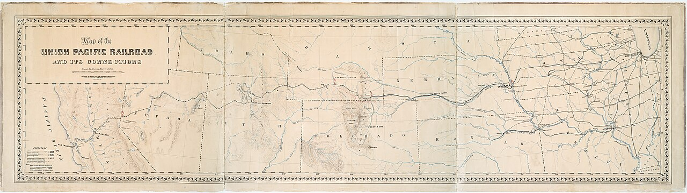
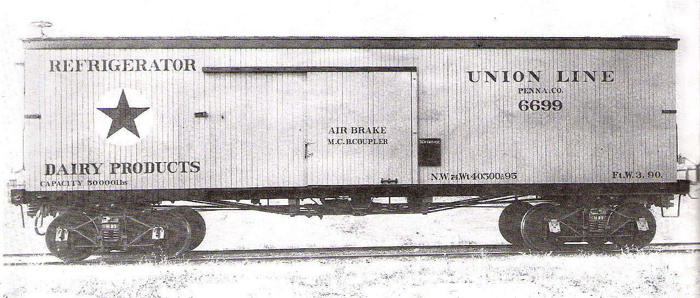
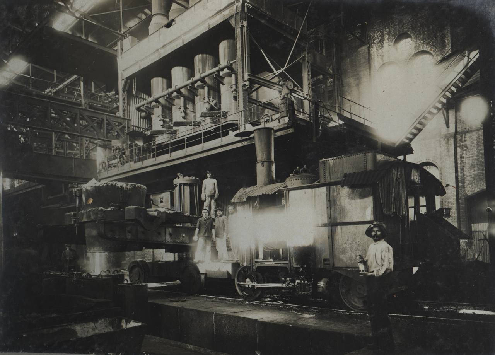
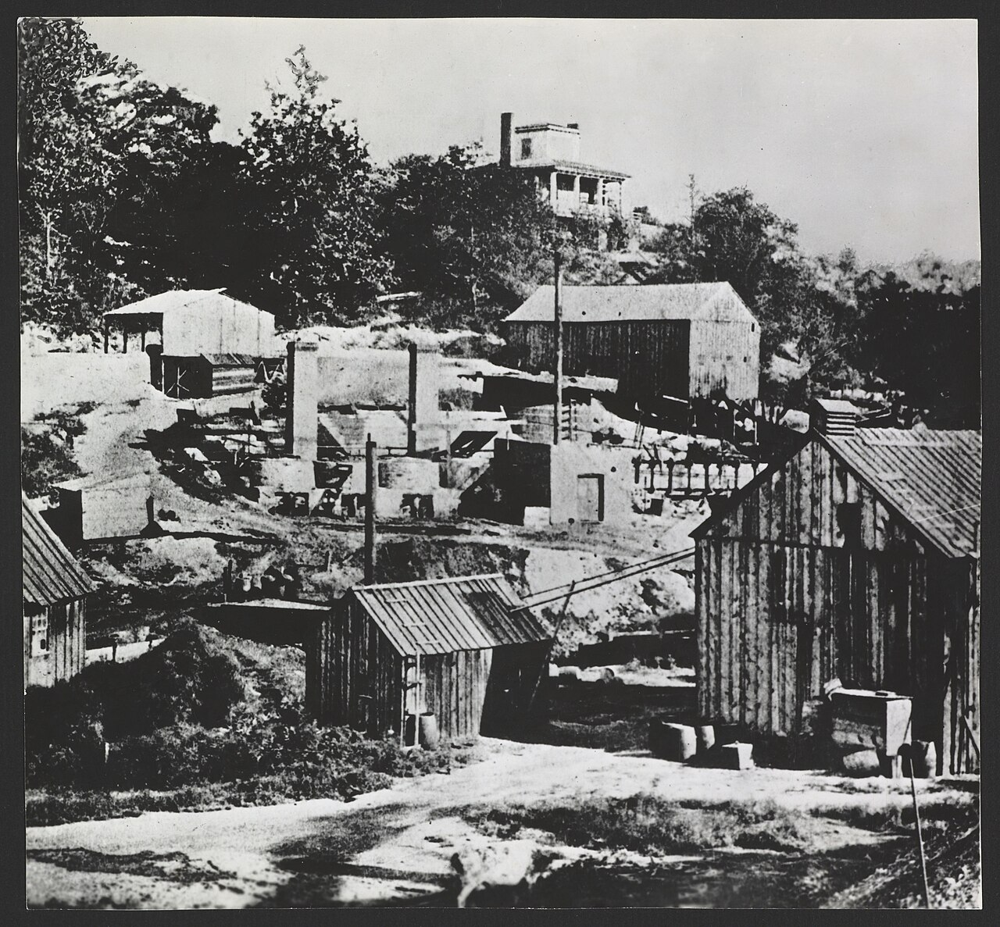
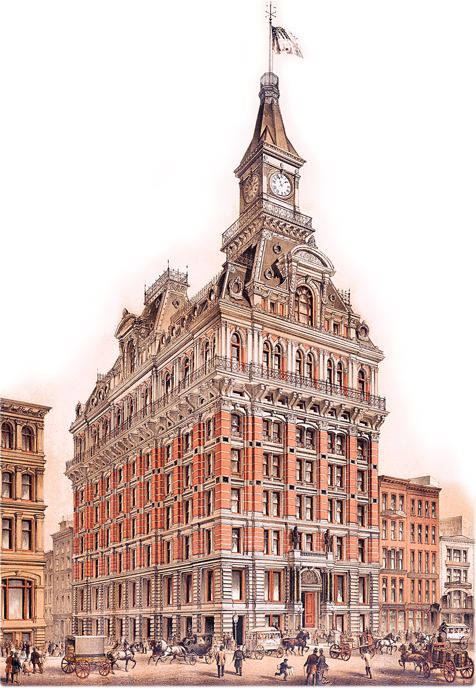

Directions: Four things move across the country in this activity: a carload of beef, a steel rail, a barrel of oil, and a telegram. At each station, trace the route on the map below, read the station text, and answer the questions. At the end, judge which of the four links mattered most in building one national market.

The map was printed in 1865, while the transcontinental line was still being built. The four stations use the completed network of the 1870s and 1880s, when connecting lines had filled in the routes the map only promised. City names in each station text are your tracing points.
Source: Photograph of a Union Refrigerator Line refrigerator car, 1895, with a summary of the dressed beef trade.

Trace the carload on the map. Cattle walk off the plains into stockyards at Chicago. At a Chicago packinghouse the animals are slaughtered, and the dressed beef is loaded into a refrigerator car cooled with blocks of ice. The car travels east through Buffalo to New York City, where the beef is sold to butchers who once bought only from farms in their own region.
Before refrigerator cars, a city ate meat raised nearby or meat preserved by salt. Dressed beef shipped from Chicago undercut both. The packinghouses that organized the trade, such as the firms of Gustavus Swift and Philip Armour, grew into some of the largest businesses in the country because one plant could now supply cities a thousand miles apart.
Trace the route in your own words. At each stop on the route, name what happened to the carload and what the railroad made possible there that a wagon could not do.
Who gained from this link, and who faced new pressure because of it? Name at least one of each and explain.
Source: Photograph of a Bessemer converter at work, taken between 1890 and 1908, with a summary of the rail trade.

Trace the rail on the map. Iron ore dug near Lake Superior travels by boat and rail to a mill near Pittsburgh. Coal from Pennsylvania mines, baked into coke, fires the mill. Inside a Bessemer converter, air blown through molten iron burns out impurities in minutes, and the steel is rolled into rails. The finished rail then rides a train west and is laid as track in Nebraska, where it becomes part of the road that carried it.
Iron rails wore out quickly under heavy traffic, sometimes within a few years. Steel rails lasted far longer, but steel had been too costly for track until the Bessemer process made it by the ton. Andrew Carnegie built his Pittsburgh mills to control every step of this route, from ore lands and coke ovens to the rolling mill itself.
What did the Bessemer process change about the cost and supply of rails, and why did that change matter to a railroad building a thousand miles of track?
This station is a loop. The railroad carried the materials that made the rail, and the rail then carried the railroad. Explain the loop in your own words and say what it shows about how industry grew.
Source: Photograph of the Standard Oil Company refinery at Walworth Run, Cleveland, 1870, with a summary of the oil trade.

Trace the barrel on the map. Crude oil is pumped from wells near Titusville, Pennsylvania, where Edwin Drake drilled his successful well in 1859. In the first years it travels in wooden barrels on wagons and rail cars. At a refinery in Cleveland it is separated into products, above all kerosene for lamps. Tank cars then carry the kerosene east to New York and to ports for shipment overseas.
Crude oil by itself was worth little, so the profit sat in refining and shipping. A large refinery separated crude more cheaply than a small one, and railroads charged their biggest shippers the lowest rates. John D. Rockefeller built Standard Oil, founded in 1870, on both facts. Small refiners who paid full freight on every barrel struggled to match the delivered price of a company that shipped by the trainload.
Why did refining reward the largest companies? Give two reasons from the station text.
How did railroad freight rates shape who survived in the oil business? Answer with the small refiner and Standard Oil as your two cases.
Source: Lithograph of the Western Union Telegraph Building in New York, about 1875, with a summary of railroad telegraphy.

Trace the telegram on the map. A buyer in New York learns by wire that beef prices have risen in Chicago. Within minutes a message travels west along wires strung beside the tracks. A packinghouse manager in Chicago orders refrigerator cars, holds a shipment that was about to leave for a weaker market, and sends it east instead. The cars, the prices, and the orders all move on information that now travels faster than any train.
Telegraph lines were usually built along railroad rights of way, and the transcontinental telegraph line was completed in 1861, eight years before the railroad. Railroads were also the telegraph companies' largest customers. Dispatchers used the wire to control trains on single track lines, which made denser traffic possible. Western Union, the dominant company, built its headquarters in New York in 1875, in the building shown here.
What decisions could a manager make with the telegraph that could not be made by mail? Name two, and explain what made each one possible.
Why did the telegraph and the railroad strengthen each other? Give one reason in each direction.
Rank the four links from 1 to 4 by how much each one mattered in building one national market. (1 = Mattered Most, 4 = Mattered Least).
______ A Carload of Beef (the national market in goods)
______ A Steel Rail (cheap steel at industrial scale)
______ A Barrel of Oil (refining and the largest shippers)
______ A Telegram (information at the speed of the wire)
Defend your top choice in a short paragraph. Use specific evidence from the station for your top choice, and compare it with evidence from at least one other station to show why your choice mattered more.
Trace the route in your own words. At each stop, what happened to the carload, and what did the railroad make possible there that a wagon could not do? Cattle reached Chicago from the plains and were slaughtered at a packinghouse. The dressed beef was loaded into an ice cooled refrigerator car, which carried it through Buffalo to New York before it spoiled. The railroad made each step possible at scale. It delivered live animals from a wide region to one plant, and it moved a perishable finished product a thousand miles in days, in all seasons, which no wagon could do.
Who gained from this link, and who faced new pressure because of it? Gainers include the large Chicago packinghouses, which could supply distant cities from one plant, and eastern consumers, who bought cheaper beef. Under pressure were local butchers and small regional packers, who now competed with Chicago beef in their own towns, and cattle raisers, who depended on the few large buyers and the railroad rates that reached them. Accept any pairing the student supports from the text.
What did the Bessemer process change about the cost and supply of rails, and why did that matter to a railroad building a thousand miles of track? The process made steel quickly and cheaply in large batches, by blowing air through molten iron to burn out impurities in minutes. Track is bought by the mile and replaced by the mile, so a railroad building at continental scale needed rails that were both cheap enough to buy in quantity and durable enough to last under heavy traffic. Iron rails wore out within a few years. Bessemer steel rails solved the cost problem and the wear problem at once.
This station is a loop. Explain the loop and what it shows about how industry grew. Railroads carried ore, coal, and coke to the mills and carried finished rails away, and those rails then extended and maintained the railroad network itself. Industry grew as a connected system in which each part supplied the others, not as separate inventions that happened at the same time. Strong answers name at least two legs of the loop and the feedback between them.
Why did refining reward the largest companies? Give two reasons. A large refinery separated crude oil into products more cheaply per barrel than a small one, and railroads charged their largest shippers the lowest freight rates, so the largest company had a cost advantage in production and a second one in shipping. A third acceptable reason is that the profit sat in refining and shipping rather than in the crude itself, which rewarded whoever controlled those two steps.
How did railroad freight rates shape who survived in the oil business? Rates acted as a filter. A small refiner paid full freight on every barrel and had to match the delivered price of Standard Oil, which shipped by the trainload at lower rates and refined more cheaply. Over time the small refiner could not cover costs at the price the large company could profitably charge, so small firms sold out, closed, or were absorbed. The railroad did not set out to pick the winner, but its rate structure helped decide who the winner was.
What decisions could a manager make with the telegraph that could not be made by mail? Any two, explained. Learn prices in a distant city the same day and act on them. Order cars to the place that needed them instead of guessing weeks ahead. Hold or redirect a shipment already loaded when a market changed. Coordinate trains by dispatch so a single track line could carry denser traffic safely. Mail took days to weeks, so every one of these decisions would have arrived after the facts it depended on had changed.
Why did the telegraph and the railroad strengthen each other? Give one reason in each direction. Telegraph to railroad: dispatching let railroads run more trains safely on single track, and wires beside the tracks gave the road its own communication system for schedules and orders. Railroad to telegraph: railroads gave telegraph companies a cleared right of way to build along, a construction and maintenance path across the continent, and their largest base of paying customers.
Student paragraphs will vary with the ranking. Full credit should be awarded if the student: